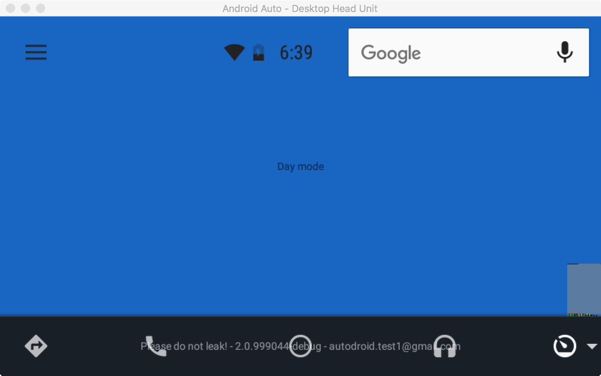
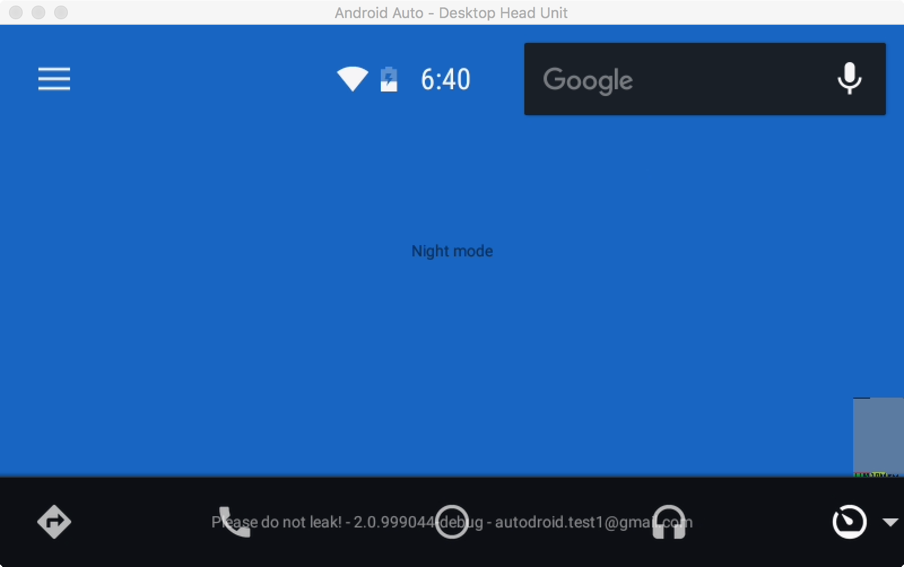

The Android Auto SDK provides a convenient facility to access car related functions through the Car Support Library. For example, we can access car sensor values via the CarSensorManager.
To obtain an instance of the CarSensorManager, we connect to the Car and pass in a CarConnectionCallback which is invoked after the connection has been established. We also get a callback when the connection gets torn down. After we have a handle to an instance of the CarSensorManager, we can request the latest value or set up a listener for events from a particular sensor. In this example, we keep it simple and just request the current value of the Day/Night sensor.
Modify the code so that it looks like the code below:
HelloWorldCarActivity.java
private Car mCar;
private CarSensorManager mCarSensorManager;
private TextView mCarData;
...
private CarConnectionCallback mConnectionCallback = new CarConnectionCallback() {
@Override
public void onConnected(Car car) {
try {
mCarSensorManager =
(CarSensorManager) car.getCarManager(CarSensorManager.class);
CarSensorEvent event = mCarSensorManager.getLatestSensorEvent(
CarSensorManager.SENSOR_TYPE_NIGHT);
if (event.getNightData().isNightMode) {
mCarData.setText(R.string.night_mode);
} else {
mCarData.setText(R.string.day_mode);
}
} catch (CarNotConnectedException e) {
mCarData.setText(R.string.car_connection_failed);
}
}
@Override
public void onDisconnected(Car car) {
mCarSensorManager = null;
mCar = null;
mCarData = null;
}
};
@Override
public void onCreate(Bundle bundle) {
super.onCreate(bundle);
...
// Add this code to get a connection to the car.
Car mCar = Car.createCar(this, mConnectionCallback);
mCarData = (TextView) findViewById(R.id.car_data);
mCarData.setText(R.string.establishing_connection);
mCar.connect();
}
@Override
public void onDestroy() {
mCar.disconnect();
super.onDestroy();
}
Build, deploy, and run your application. You can now see that it correctly displays the current status of the Day/Night sensor of the car.

We can test that the sensor value is being read correctly by changing Desktop Head Unit to night mode. You can do this by pressing the N key on your keyboard while the Android Auto window is selected. Alternatively, you can type the commands ‘day' or ‘night' into the terminal where Desktop Head Unit was launched from.
After you trigger night mode, you should see the screen change to the one below.

Note: Ordinarily, you would use standard Android Resource Modifiers to handle Day/Night switches correctly. This is just an example of how to talk to the Car sensors and uses the day night sensor because it is simulated in the Desktop Head unit.
Tip: You can use the day night simulation mechanism demonstrated here to test that your application looks good in both day and night mode.